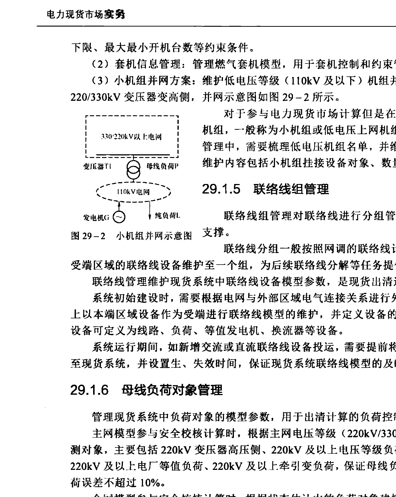

29.1.2 发电集团管理
发电集团管理维护现货系统发电集团模型，包括集团名称和生失效时间。
29.1.3 市场成员管理
市场成员管理维护现货系统中发电单位、售电单位及电网调度机构，并且可以维护发电厂所属集团及所属电网调度机构。
29.1.4 发电机组管理
发电机组管理维护现货系统中机组模型参数，如表29–1所示。
| 模型 | 物理参数 |
|---|---|
| 发电机组 | 机组类型 |
| 调度性质 | |
| 所属市场成员 | |
| 额定有功功率 | |
| 最小技术出力 | |
| 有功功率上调节速率 | |
| 有功功率下调节速率 | |
| 最小连续运行时间 | |
| 最小连续停机时间 | |
| 日最大启停次数 | |
| 厂用电率 | |
| 冷态启动时间 | |
| 温态启动时间 | |
| 热态启动时间 | |
| 机组燃料类型 | |
| 调峰能力 | |
| 是否联合循环 | |
| 是否热电联产 | |
| 机组启停曲线 | |
| 生效时间 |
发电机组的运行参数来源于调度管理或市场主体申报，新增厂站时，需要现货系统运维人员及时维护对应发电机组的静态物理参数，如果物理参数来源于市场主体申报，需要运维人员及时核实市场主体申报信息，并进行审批操作，保证参数的合理性和有效性。
（1）机组群管理：管理一台或多台机组组成一个控制单元，用于控制机组群的出力上限、最大最小开机台数等约束条件。
（2）套机信息管理：管理燃气套机模型，用于套机控制和约束管理。
（3）小机组并网方案：维护低电压等级（110kV及以下）机组并网节点，并网节点为220/330kV变压器变高侧，并网示意图如图29–2所示。

对于参与电力现货市场计算但是在物理模型中未建模的机组，一般称为小机组或低电压上网机组。电力现货市场模型管理中，需要梳理低电压机组名单，并维护至现货系统，主要维护内容包括小机组挂接设备对象、数量及挂接系数。
29.1.5 联络线组管理
联络线组管理对联络线进行分组管理，为数据管理提供支撑。
联络线分组一般按照网调的联络线计划为依据，将同一送受端区域的联络线设备维护至一个组，为后续联络线分解等任务提供模型基础。
联络线管理维护现货系统中联络线设备模型参数，是现货出清过程中的基础单位。
系统初始建设时，需要根据电网与外部区域电气连接关系进行外部联络线定义，原则上以本端区域设备作为受端进行联络线模型的维护，并定义设备的送受端区域。联络线设备可定义为线路、负荷、等值发电机、换流器等设备。
系统运行期间，如新增交流或直流联络线设备投运，需要提前将新增联络线模型维护至现货系统，并设置生、失效时间，保证现货系统联络线模型的及时、准确。
29.1.6 母线负荷对象管理
管理现货系统中负荷对象的模型参数，用于出清计算的负荷控制。
主网模型参与安全校核计算时，根据主网电压等级（220kV/330kV）划分母线负荷预测对象，主要包括220kV变压器高压侧、220kV及以上电压等级负荷或设备等值为负荷、220kV及以上电厂等值负荷、220kV及以上牵引变负荷，保证母线负荷预测总加与系统负荷误差不超过10%。
全网模型参与安全校核计算时，根据状态估计中的负荷对象建模，保证母线负荷预测总加与系统负荷误差不超过10%。
29.1.7 设备并网路径管理
管理检修设备复电时的并网路径方案，避免现货系统未收到复电方式时系统自动复电操作出现拓扑错误的情况。
29.1.8 模型参数定义
管理发电机组、联络线、市场成员的拓展参数，可以灵活扩展发电机组、联络线等模型的控制参数。
29.2 市场数据管理
市场数据管理主要对市场出清计算所使用到的各类外部输入数据及市场运营参数进行管理维护，并对所有出清计算所使用到的各类数据进行封存，便于事后出清反演计算。
现货系统的数据管理模块包含了所有外部数据管理模块、数据交互管理模块及现货系统内部数据维护模块。
电力现货市场主要与电网调度机构内部系统、电力交易机构系统、上级电网调度机构计划系统等进行数据交互，数据管理明细如表29-2所示，其中主要交互数据内容包括：系统负荷预测、母线负荷预测、联络线计划、机组市场报价、机组出力限额、机组检修计划、输变电设备检修计划、非市场机组计划、机组调试计划、机组群约束、机组必开必停信息、省间现货出清结果、辅助服务出清结果信息等数据。
| 数据分类 | 数据项 |
|---|---|
| 预测类数据 | 系统负荷预测 |
| 母线负荷预测 | |
| 新能源预测 | |
| 申报类数据 | 机组市场报价 |
| 机组出力限额 | |
| 机组调试计划 | |
| 检修类数据 | 机组检修计划 |
| 输变电设备检修计划 | |
| 约束类数据 | 非市场机组计划 |
| 机组群约束 | |
| 机组必开必停信息 | |
| 上级电网调度机构 | 联络线计划 |
| 省间现货出清结果 | |
| 省间辅助服务市场出清结果 |
29.2.1 数据等级及校验规则维护
电力现货市场运营前，需要对电力现货市场所需数据按照重要程度进行分类并维护其校验规则。根据电力现货市场出清需要，将数据分为必要数据和非必要数据。
校验规则主要包括数据完整性校验、模型数据校验、数值异常校验和多数据联合校验等。通过配置校验规则的生失效状态完成各类分项数据的单一合理性验证，以及对各种相互关联数据的相关性验证。
29.2.2 数据接受及发布信息配置
确认好数据交互方式后，对每一项数据的数据交互信息进行逐项配置并测试，保证数据传输路径畅通。
对于现货系统输入数据，需要维护各类数据文件的主、备服务器ip和解析路径以及数据文件备份路径。
对于现货系统输出数据，需要维护各类数据文件的目标系统服务器ip和目的路径，以及本地文件的备份路径。
29.2.3 数据交互监视及维护
数据交互管理模块包括数据接入监视、数据接入日志、数据发送、数据发送日志、信息披露校核等界面，其中数据发送界面可以手动触发现货系统数据发送流程，信息披露校核界面可以查看现货发出的数据明细。
电力现货市场运营前，需要确保市场所需数据的完整性，在电力现货市场技术支持系统数据接入监视模块查看数据接入状态。
数据未按时到达：根据未到达数据属性，重要不可修改数据需协调相关管理人员及时补送数据，对于可替代非必要数据进行人工维护，一般采用相似替换或手动录入等方式。
数据校验错误：根据系统提示的数据校验错误信息，检查数据合理性并逐个解决，保证市场所需数据的准确性和合理性。
数据未送达：在电力现货市场出清完成后，需要对市场运营数据进行信息披露，数据发布后，需要确认需披露的每类数据是否成功到达目标系统，监视文件到达状态，及时处理异常的文件送达信息。
29.2.4 市场计算参数维护
现货系统内部数据维护模块包括系统备用需求、机组日状态计划、机组实际运行状态、灵敏度计算设置，其中系统备用需求和灵敏度计算设置界面支持增删改查操作。
29.3 系统监视与管理
系统监视主要是对技术支持系统服务器、应用、进程、CPU负载信息、磁盘容量负载信息、网卡信息等状态进行监视，一旦系统出现异常时进行相关启停操作。系统管理主要是对系统备份以及主备进行管理。
29.3.1 系统监视管理
系统监视与管理主要是对技术支持系统服务器、应用、进程等状态进行监视，一旦系统出现异常时进行相关启停操作，主要包括服务器监视、应用监视、进程监视、CPU负载信息监视、磁盘容量负载信息监视、网卡信息监视。
（1）服务器监视。实时监视现货系统中服务器的在线状态及状态的刷新时间；若服务器在线，则显示"在线"，若服务器离线，则显示"离线"并发送告警提示用户。
（2）应用监视。实时监视所有应用的状态、主机名和状态刷新时间。若进程正常运行，状态栏应显示"在线"，且刷新时间应不断滚动。
（3）进程监视。实时监视所有进程的在线状态以及所属应用。
（4）CPU负载信息监视。实时监视所有服务器的CPU负载率，并将负载率按从高到低排序，便于值班人员关注负载率最高的机器。
（5）磁盘容量负载信息监视。实时监视所有服务器的磁盘分区使用率，并按从高到低的顺序排序。
（6）网卡信息监视。实时监视所有服务器的网卡在线情况及刷新时间。
29.3.2 系统备份管理
（1）对电力现货市场计算需要的模型、方式文件和外部数据文件进行定时备份，并设置至少两份存储方案。
（2）对日前、实时市场案例计算文件信息进行定时备份，并设置至少两份存储方案。
（3）对电力现货市场系统计算日志进行定时清理备份，保证系统长周期可持续运行。
（4）对电力现货市场数据库进行定时备份。
29.3.3 系统主备管理
实时市场为24h不间断运行系统，为保证系统运行稳定，需要加强实时市场的主备系统管理。
（1）周期性对比主、备系统的可执行程序、动态库、配置文件以及实时库重要运行参数是否一致，不一致及时处理；保证主备机与市场出清算法和安全校核服务器的ssh可信是否重新配置，是否需要登录确认。
（2）主备切换演练。根据系统运行情况，伺机开展主备机切换演练，保证主备切换后实时市场能正常运行。
29.4 用户权限管理
用户权限管理主要对用户注册及权限进行管理，设定用户角色及访问权限。
在现货系统对账户的管理中存在"角色"的概念。"角色"用于界定用户的行为权限边界，是权限维护的基础单位。
（1）首先建立多个不同的"角色"，并为每个"角色"指定其行为边界，不同"角色"之间的权限应各不相同，例如日前市场运营人员仅可访问日前市场相关界面，实时市场运营人员只可访问实时市场相关界面。
（2）其次，在账户创建后，必须为其指定"角色"，单个账户必须配置"角色"才可访问系统。单个账户可以拥有多个"角色"（例如日前市场运营人员+实时市场运营人员）。若账户使用人员管理的业务发生变化，只需更改其使用的账户的"角色"，即可更改其访问权限。
29.5 实时市场监盘
实时市场监盘主要是对实时市场滚动出清流程进行监视和控制，主要包括数据交互、数据准备、数据校验、出清计算、校核计算、数据发布、结果监测等环节，如图29-3所示。
（1）数据准备监视。监视实时市场数据交互、数据准备及数据校验情况。
（2）出清计算监视。对出清计算的核心算法的状态、计算分配和收敛性等方面进行监视。
（3）校核计算监视。包括校核资源状态、计算分配和收敛状态等方面进行监视。
（4）市场发布监视。包括调度结果及市场结果发布监视。
（5）市场结果监测。包括电网安全、系统平衡、节点电价、系统备用等方面结果监测。
29.6 本章小结
系统运维管理是电力市场技术支持系统上线运行后能否长期稳定运行的重要技术保障，通过系统运维管理所提供的各类自动化监视与管理工具，提升系统日常运维效率，及时发现系统运行风险，快速处置系统异常状态，是电力市场技术支持系统重要支撑功能。
第30章 安全防护
电力现货市场技术支持系统是类金融系统，系统出清结果直接影响了市场主体收益甚至是整个社会经济有序、平稳发展，因此，需围绕电力现货市场业务特征建立一套完整的安全防护体系来保证系统安全、稳定运行。电力现货市场系统安全防护的目标是防范、抵御黑客及恶意代码等通过各种形式对系统发起的恶意破坏和攻击，确保系统数据安全，保障电力现货市场安全稳定运行。本章从机房环境、边界防护、本体安全、数据保护、运维安全、监测预警等几个方面重点阐述电力现货市场系统安全防护措施及所采用的技术。
30.1 机房环境
系统机房一般选择在具有防震、防风和防雨等能力的建筑内，具有有效防水、防潮、防火、防静电、防雷击、防盗窃、防破坏措施。在机房供电线路上配置稳压器和过电压防护设备，设置冗余或并行的电力电缆线路为计算机系统供电，建立了备用供电系统，提供短期的备用电力供应，满足设备在断电情况下的正常运行要求。机房配置了电子门禁系统及具备存储功能的视频、环境监控系统以加强物理访问控制。
30.2 边界防护
边界安全是电力监控系统网络安全防护体系的基础框架，也是所有其他安全防护措施的重要基础。
遵照《电力监控系统安全防护规定》（国家发展改革委2014年第14号令）和《电力监控系统安全防护方案》（国能安全〔2015〕36号）规定，电力现货市场系统主要功能模块置于生产控制大区安全II区和管理信息大区安全III区，涉及互联网的功能模块应部署于信息外网。
电力现货市场系统在生产控制大区与其他地区的生产控制大区系统进行通信时，采用电力调度数据网进行通信。管理信息大区业务应采用电力企业数据网进行通信，电力企业数据网为电力企业内联网。